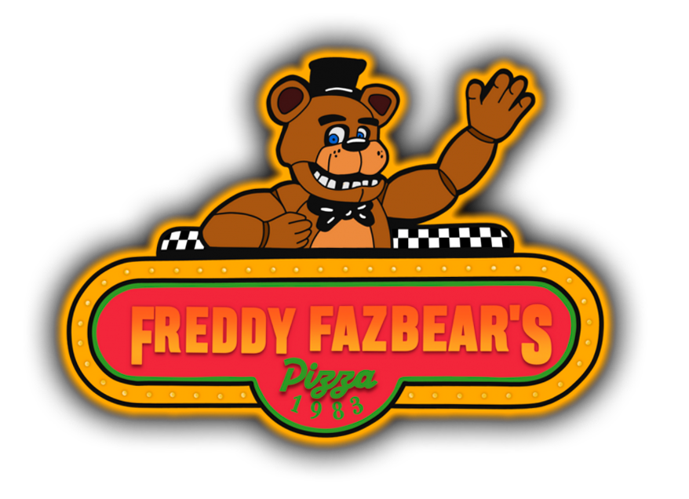
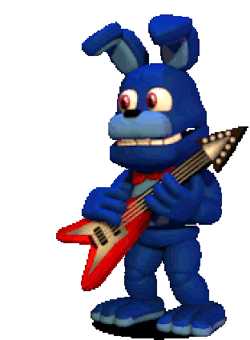
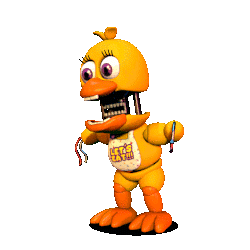
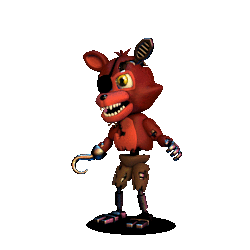
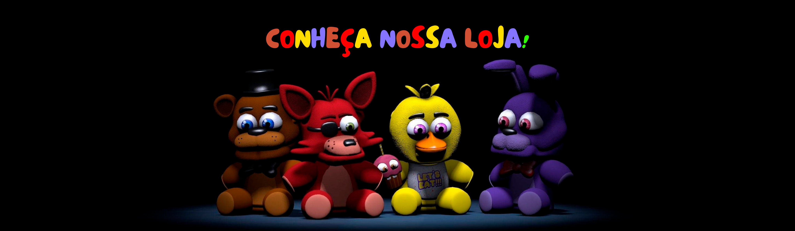

Bem vindo(a) ao Freddy Fazbear Pizza!
  
"Five Nights at Freddy's" (FNaF) é uma popular série de jogos de terror indie criada por Scott Cawthon. O primeiro jogo foi lançado em agosto de 2014, e desde então, vários outros jogos foram adicionados à série, bem como livros e outros produtos relacionados.
A história de "Five Nights at Freddy's" gira em torno de uma pizzaria fictícia chamada Freddy Fazbear's Pizza, onde os jogadores assumem o papel de um guarda noturno encarregado de monitorar a pizzaria durante a noite. Os personagens principais são animatrônicos animados, que são versões robóticas de animais, como Freddy Fazbear, Bonnie the Bunny, Chica the Chicken e Foxy the Pirate. Esses animatrônicos, durante a noite, tornam-se agressivos e tentam atacar o jogador.
O jogo tem uma jogabilidade simples, mas intensa. O jogador está confinado a uma sala de controle e deve monitorar as câmeras de segurança para rastrear os movimentos dos animatrônicos. O objetivo é sobreviver durante cinco noites (ou mais, dependendo do jogo) evitando que os animatrônicos entrem na sala do jogador. Isso envolve o uso estratégico das luzes do escritório, das portas e do monitor de câmera para se proteger contra os ataques dos animatrônicos.
O jogo é conhecido por sua atmosfera assustadora e pela construção de tensão. Os animatrônicos se movem de maneira imprevisível e podem aparecer de repente nas câmeras ou na sala do jogador, resultando em momentos assustadores. O suspense é aprimorado pela trilha sonora e pelos efeitos sonoros, contribuindo para uma experiência de jogo intensa.
Ao longo da série, a narrativa se desenvolveu por meio de mensagens ocultas, minigames e elementos de fundo. A comunidade de fãs ficou conhecida por criar e debater teorias complexas sobre a história por trás dos jogos, tentando desvendar os mistérios do universo de "Five Nights at Freddy's".
